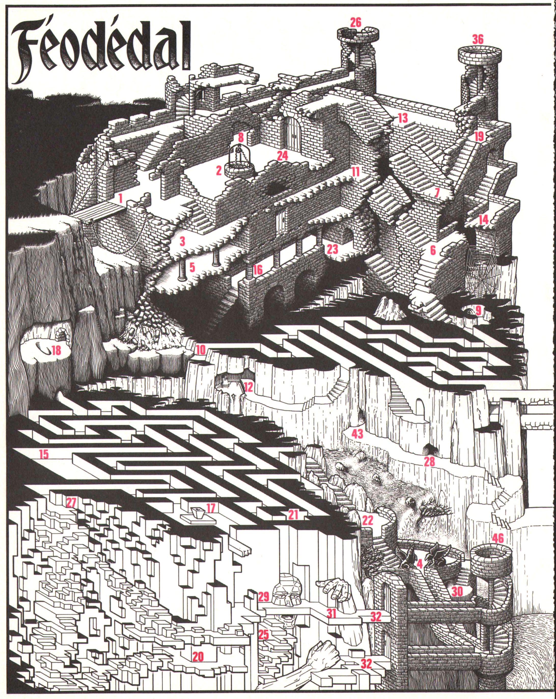

Le diabolique Philippe Fassier a encore frappé ! Vous vous retrouverez d’ici peu perdu dans le inquiétantes ruines des pages suivantes. En sortir ne sera pas si facile. Mais quant à y parvenir non seulement en bonne santé mais de plus riche … ce sera une autre histoire !
Vous voici à l’entrée d’un inquiétant château en ruines, détruit par quelque séisme ou colère divine. Votre intrusion risque de réveiller des légendes depuis longtemps oubliées… Vous vous êtes aventuré dans l’enceinte sans précaution ni matériel (cordes, lampes…) et le pont levis s’est effondré après votre passage. C’était le seul moyen d’accès.
but du jeu: ressortir du château sain et sauf et peut être chargé de trésors.
déroulement de la partie: vous débutez en 1. À chaque numéro rencontré lors de votre périple, vous vous reportez à la liste de description ci-dessous pour connaître l’événement correspondant (vous trouverez la signification des symboles utilisés dans le tableau). Lorsque, dans la liste des événements, vous rencontrez un nombre de 100 à 200, vous vous reportez aux notes de résolution, page 110, pour connaître le résultat de votre action.
Sauf indication contraire, vous ne pouvez pas franchir les zones noires ni sauter les murs.
N’oubliez pas que votre but premier est de ressortir du château vivant… et en bonne santé.

| → n | Se rendre à la note n. | ← n | Lire la note n. |
| si ← n | Si vous avez lu la note n … | HEARTS | Vous trouvez … |
| KNIVES | Vous êtes mort. | 0 | Vous pouvez … |
| ANY | Entrer. | COIN | Posséder. |
| ↑ | Se diriger vers… | R | Revenir sur ses pas… |
| CLUBS | C’est un cul de sac. | X | Impossible. |
| DIAMONDS | Passage souterrain. | P | Une pièce inoccupée. |
| CASTLES | Il ne se passe rien. |
Vous êtes ANY dans les ruines, le pont-levis s’écroule, XR.
Un puit, la chaîne est assez longue pour ↑ 12.
P sombre → 100.
Si vous venez de 22 → 126; sinon → 194.
P, une porte sur le côté, si vous l’ouvrez → 164.
Vous tentez de ↑ 14 → 184; vers 11 → 200; sinon CASTLES.
← 147, X de bouger, ↑.
P, un passage ↑ 13.
HEARTS un DIAMONDS, si vous ANY → 134.
X ↑ 5, mais 0 ↑ 18.
Une faille a fait s’écrouler l’escalier, mais le passage est possible;
si vous tentez de ↑ 6 → 200; si vous R → 118.
Une résurgence rejoint le torrent → 104.
L’escalier ↑ 14.
Si vous tentez de ↑ 6 → 113; sinon 0 R.
P, → 101.
Un escalier très sombre … → 176.
P, un socle vide → 127.
Un toboggan X à remonter, 0 R ou descendre.
Le mur en ruine permet de ↑ 36, si vous tentez → 116;
sinon un escalier et un DIAMONDS ↑ 23.
Rien de spécial.
Ce couloir ↑ 22.
Jolie vue sur la chute …
X ↑ autre part que 19 ou 16.
Une porte X à ouvrir.
← 120, si vous ↑ le bras de DRYH → 173;
si vous ANY dans la bouche → 121.
HEARTS l’aire d’un aigle → 107.
La carrière de rubis cubiques, X de détacher la moindre gemme !
→ 106.
Un DIAMONDS, si vous ANY → 136.
← 120; → 148.
HEARTS un DIAMONDS, si vous ANY → 165.
Si vous avez l’œil de DRYH → 183; sinon → 153.
Les deux portes ne peuvent s’ouvrir que du côté apparent.
Si vous ANY dans le DIAMONDS → 154; sinon → 101.
Ce couloir ↑ 33.
Une eau noire vous sépare de 44; si vous R → 118;
si vous ↑ 44 en barque → 146.
HEARTS l’aire d’un aigle - 117.
Si vous ANY dans le DIAMONDS → 182.
L’eau noire ne semble pas profonde pour ↑ 48; si vous traversez → 145.
Une porte ↑ 55; la porte se referme, XR.
→ 102.
Vous avez la corde … alors 0 ↑ 40 ou 42.
→ 102.
Si vous ANY → 135.
X ↑ 35, l’eau est trop profonde.
La sortie d’un DIAMONDS sous une cascade; le DIAMONDS ↑ 16.
Rien de spécial ici → 108.
→ 137.
CASTLES.
→ 190.
Dans la grotte, deux yeux vous observent, vous R → 112;
vous ↑ les yeux → 195.
Un passage étroit ↑ 53.
Une tour avec un escalier.
Un navire échoué sur la falaise → 189.
Un arbre se retient pour ne pas tomber avec la falaise → 158.
Un libre → 159.
Si vous sautez pour vous ↑ 57 → 172; sinon CLUBS.
P, CASTLES; X ↑ 56; X ↑ 47.
Une porte fermée, si vous l’ouvrez → 163.
Un cabanon sur lequel est inscrit « CAISSE » → 167.
Un petit volcan en activité → 111.
Sur l’écriteau est inscrit « SORTIE » → 149.
L’entrée d’une église en ruines → 133.
P, → 171.
Un DIAMONDS → 155.
Vous êtes dans la nef → 157.
Une fosse à serpents → 191.
Vous êtes dans la nef → 109.
Un DIAMONDS ↑ 70.
Une machine, si vous utilisez la corde pour ↑ 71 → 185; sinon CLUBS.
← 147; toutefois, un escalier et un DIAMONDS ↑ 68.
Rien de spécial, X ↑ 69.
Si ← 124, 0 passer, sinon CLUBS, de; la lave est en fusion.
X de descendre.
Si vous tentez de ↑ 73 → 186, sinon CLUBS.
Des éboulis bouchent un DIAMONDS CLUBS.
La demeure d’un vieux sorcier; si vous ANY → 188; sinon CLUBS.
Dans l’obscurité, deux portes;
si ↑ la droite → 151; si ↑ la gauche → 196.
CASTLES.
Une corde peut vous mener à 41.
Le socle semble fait pour lui, vous le posez? oui → 169; non → 118.
La chaîne tombe avec fracas dans l’eau, XR.
L’estrade sur laquelle vous êtes, vous emmène en 20.
0 ↑ 20 ou 29 ou autre en R.
et l’aigle est là … ← 141 il vous emmène en 46.
X d’ouvrir les deux portes … → 4.
CASTLES CLUBS; il y a un vase avec deux ailes, rempli de vif-argent, il est insoulevable, si vous R → 118, si vous videz le vase → 180.
Mais l’araignée, elle, ne vous épargne pas ! KNIVES.
← 141; il redouble de colère et rend X le passage en 72 → 144.
→ 118.
→ 184.
Si vous mettez l’œil de DRYH dans le trou → 142; sinon → 101.
Il vous soulève ! Vous êtes à quatre mètres du sol; vous lâchez ?
oui → 174; non → 197.
Vous arrivez en haut de la tour sans dommage.
HEARTS un œuf énorme, vous le prenez → 177; vous R → 112.
CASTLES, 0 R.
X de passer, 0 que sauter dans le vide KNIVES.
DRYH, père du royaume, pétrifié lors d’un combat de géants.
Un DIAMONDS sombre et raide, vous tombez → 178.
Le DIAMONDS ↑ 28.
Le DIAMONDS ↑ 45.
Le volcan s’apaise, après un refroidissement, 0 passer.
Si vous COIN l’œuf d’aigle → 175; sinon 119.
Si vous ne COIN pas l’œil de DRYH, X de passer entre les statues → 187.
Si vous COIN l’œuf d’aigle → 103; sinon CASTLES CLUBS.
← 141, ← 152, en échange il désire l’œuf d’aigle, si vous refusez 0 R, sinon → 168.
D’un geste, il vous tue KNIVES.
X de prévoir, vous tombez dans le vide KNIVES.
Si vous ANY dans la nef → 166; sinon → 101.
Un aigle fond sur vous, il vous emmène en 46 avec l’œuf.
Si vous ANY dans la nef → 101; sinon 0 R.
Le DIAMONDS ↑ 43.
Le DIAMONDS ↑ 9.
Le DIAMONDS ↑ la bouche en 25.
Vous êtes mouillé, vous glissez et tombez en 57;
si vous COIN l’œuf, il se brise.
0 ↑ 11, mais attention au vertige.
Le vase s’envole vers le ciel à une vitesse vertigineuse, CASTLES 0 R.
Une eau noire déferle sur vous, KNIVES.
Apparemment vous le dérangez dans son travail ….
X de le retirer ! Le sol tremble, HEARTS un DIAMONDS à côté → 179.
Il vous expédie en 52.
Si vous ne COIN pas l’œuf d’aigle, X de partir KNIVES; sinon → 192.
CASTLES, mais vous êtes trempé jusqu’aux cuisses !
CASTLES, mais arrivé en 44, la barque ↑ 35, XR.
Comment diable êtes- vous arrivé-là ?!
HEARTS une gemme de diamant dans l’œil du Père DRYH.
Si ← 145, une semaine après vous perdez l’usage de vos jambes;
si ← 192, vous devenez aveugle;
si ← 173, votre bras droit s’atrophie;
si ← 121, vous devenez muet;
si ← 176, vous devenez claustrophobe;
si ← 138, vous avez la phobie des hauteurs;
sinon, tout va bien!
CASTLES, 0 R, l’œuf est intact ….
P, un trou dans le mur → 138.
Il vous demande : « Que voulez-vous? »
CASTLES, 0 ↑ 32 (haut).
Le DIAMONDS ↑ 37.
Dans le noir, une grille se referme derrière vous, XR → 193.
L’escalier tremble mais 0 passer.
CASTLES, il n’y a rien, pourtant HEARTS un coffret rempli de joyaux!
0 ↑ 52, le DIAMONDS est fermé, CLUBS.
Tout ce que 0 déchiffrer :
« Celui qui désire la richesse embarquera; s’il convoite la gloire, il attendra le neuvième mois et s’il veut la liberté, il volera les ailes de mercure ».
HEARTS un trou sur le front, si vous COIN l’œil de DRYH → 114, sinon → 101.
← 141, ← 152, → 168.
Une fois, ça va, deux fois. l’escalier s’écroule KNIVES.
Elle résiste, si vous insistez → 140.
P sombre, un rai de lumière passe sous une porte; vous R → 118; vous ANY → 130.
Un DIAMONDS sombre et raide, vous ↑ un carrefour dans le noir;
vous ↑ la droite → 122; vous ↑ la gauche → 136.
Il sombra, mais ne tombera point.
Si vous ne COIN aucune gemme, le guide ouvre une trappe sur un DIAMONDS et vous y tombez → 193; sinon → 199.
Vous répondez :
« la richesse » → 143
« la gloire » → 181
« la liberté » → 170.
L’œuf se dématérialise! → 105.
Il éclate de rire puis → 198.
CASTLES, rien que des graffitis cabalistiques … CLUBS.
OK, CASTLES, mais XR.
0 ↑ 32 (bas), CASTLES.
Vous vous retrouvez en 70, il ↑ le ciel. si vous COIN l’œuf, il s’est écrasé.
Avec ça, vous survivrez une semaine, car → 119.
L’escalier ↑ un DIAMONDS; après une très longue marche dans le noir → 123.
OK; vous R en 19 ? oui → 150; vous attendez → 132.
Si vous COIN l’œuf, il se brise; si vous COIN l’œil de DRYH, vous le perdez; → 122.
Il ↑ 54.
Vidé du lourd liquide, il semble attiré vers le ciel; vous lâchez → 139; vous ne lâchez pas → 115.
Il réfléchit et répond : « Vous la trouverez seul! » → 129.
Le DIAMONDS ↑ 33.
La main de pierre s’abat sur vous, KNIVES.
Les ruines s’écroulent, la toile d’araignée vous sauve de la chute mortelle → 110.
La machine ne bronche pas, mais arrivé en 71, elle rembobine la corde, XR.
Si vous COIN l’œuf, il se brise; 0 ↑ 73 mais XR.
0 ↑ 30 ou 22.
Si vous COIN l’œuf d’aigle → 128; sinon → 161.
Le passage pour ↑ 51 s’écroule, XR → 131.
Une porte X à ouvrir, CLUBS.
X R, KNIVES.
En le jetant au feu, une vive explosion … → 124.
Le DIAMONDS ↑ 66.
Si vous COIN l’œil de DRYH, 0 passez entre les statues; sinon → 125.
CASTLES, c’est une statue, les yeux sont en diamant, X à retirer → 160.
Un escalier dans le noir ↑ 5.
Trop tard, si vous lâchez, KNIVES;
sinon KNIVES à partir de 10 000 mètres d’altitude ! …
Il vous expédie en 7.
Vous lui donnez l’œil de DRYH, (ou autre si vous COIN), puis 0 passer.
Si ← 156 → 162; sinon → 156.